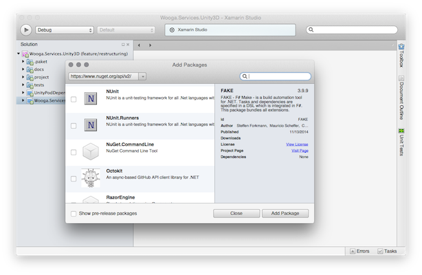
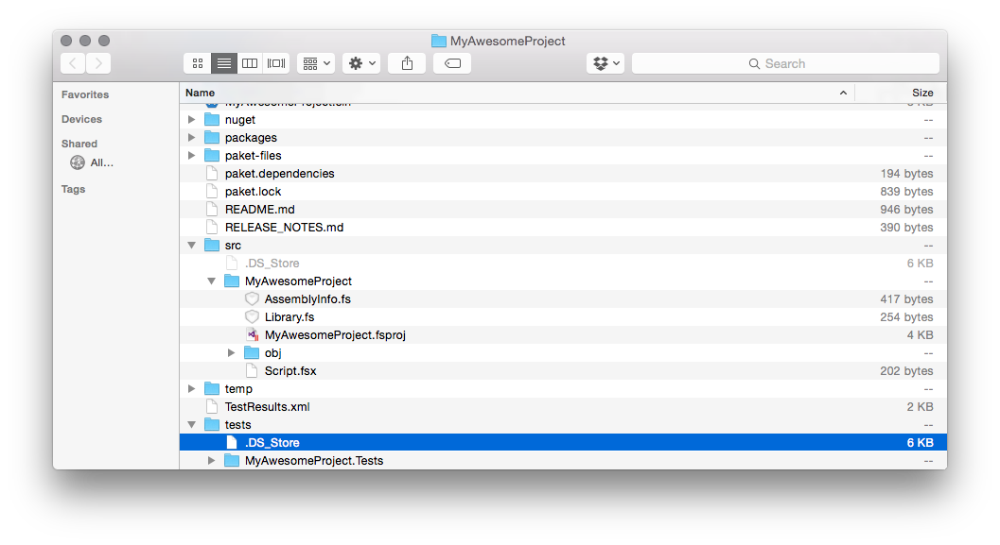
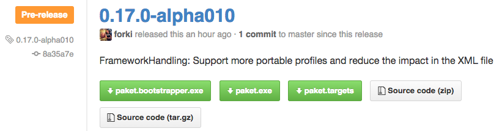
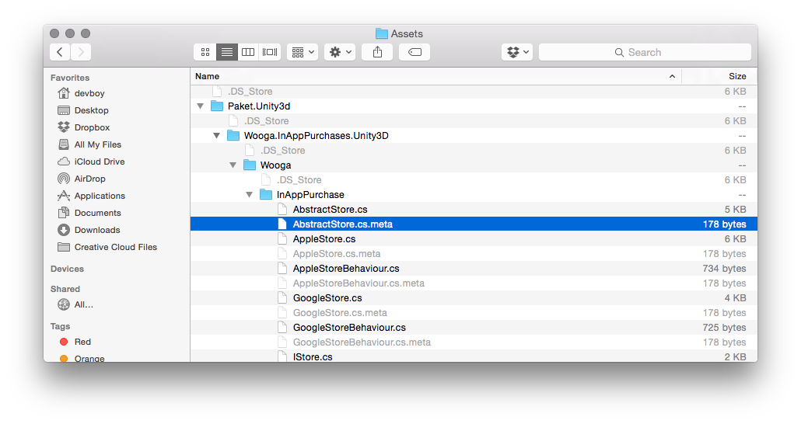

val ignore : value:'T -> unit
Full name: Microsoft.FSharp.Core.Operators.ignore
Full name: Microsoft.FSharp.Core.Operators.ignore
val sprintf : format:Printf.StringFormat<'T> -> 'T
Full name: Microsoft.FSharp.Core.ExtraTopLevelOperators.sprintf
Full name: Microsoft.FSharp.Core.ExtraTopLevelOperators.sprintf
Multiple items
type Async
static member AsBeginEnd : computation:('Arg -> Async<'T>) -> ('Arg * AsyncCallback * obj -> IAsyncResult) * (IAsyncResult -> 'T) * (IAsyncResult -> unit)
static member AwaitEvent : event:IEvent<'Del,'T> * ?cancelAction:(unit -> unit) -> Async<'T> (requires delegate and 'Del :> Delegate)
static member AwaitIAsyncResult : iar:IAsyncResult * ?millisecondsTimeout:int -> Async<bool>
static member AwaitTask : task:Task<'T> -> Async<'T>
static member AwaitWaitHandle : waitHandle:WaitHandle * ?millisecondsTimeout:int -> Async<bool>
static member CancelDefaultToken : unit -> unit
static member Catch : computation:Async<'T> -> Async<Choice<'T,exn>>
static member FromBeginEnd : beginAction:(AsyncCallback * obj -> IAsyncResult) * endAction:(IAsyncResult -> 'T) * ?cancelAction:(unit -> unit) -> Async<'T>
static member FromBeginEnd : arg:'Arg1 * beginAction:('Arg1 * AsyncCallback * obj -> IAsyncResult) * endAction:(IAsyncResult -> 'T) * ?cancelAction:(unit -> unit) -> Async<'T>
static member FromBeginEnd : arg1:'Arg1 * arg2:'Arg2 * beginAction:('Arg1 * 'Arg2 * AsyncCallback * obj -> IAsyncResult) * endAction:(IAsyncResult -> 'T) * ?cancelAction:(unit -> unit) -> Async<'T>
static member FromBeginEnd : arg1:'Arg1 * arg2:'Arg2 * arg3:'Arg3 * beginAction:('Arg1 * 'Arg2 * 'Arg3 * AsyncCallback * obj -> IAsyncResult) * endAction:(IAsyncResult -> 'T) * ?cancelAction:(unit -> unit) -> Async<'T>
static member FromContinuations : callback:(('T -> unit) * (exn -> unit) * (OperationCanceledException -> unit) -> unit) -> Async<'T>
static member Ignore : computation:Async<'T> -> Async<unit>
static member OnCancel : interruption:(unit -> unit) -> Async<IDisposable>
static member Parallel : computations:seq<Async<'T>> -> Async<'T []>
static member RunSynchronously : computation:Async<'T> * ?timeout:int * ?cancellationToken:CancellationToken -> 'T
static member Sleep : millisecondsDueTime:int -> Async<unit>
static member Start : computation:Async<unit> * ?cancellationToken:CancellationToken -> unit
static member StartAsTask : computation:Async<'T> * ?taskCreationOptions:TaskCreationOptions * ?cancellationToken:CancellationToken -> Task<'T>
static member StartChild : computation:Async<'T> * ?millisecondsTimeout:int -> Async<Async<'T>>
static member StartChildAsTask : computation:Async<'T> * ?taskCreationOptions:TaskCreationOptions -> Async<Task<'T>>
static member StartImmediate : computation:Async<unit> * ?cancellationToken:CancellationToken -> unit
static member StartWithContinuations : computation:Async<'T> * continuation:('T -> unit) * exceptionContinuation:(exn -> unit) * cancellationContinuation:(OperationCanceledException -> unit) * ?cancellationToken:CancellationToken -> unit
static member SwitchToContext : syncContext:SynchronizationContext -> Async<unit>
static member SwitchToNewThread : unit -> Async<unit>
static member SwitchToThreadPool : unit -> Async<unit>
static member TryCancelled : computation:Async<'T> * compensation:(OperationCanceledException -> unit) -> Async<'T>
static member CancellationToken : Async<CancellationToken>
static member DefaultCancellationToken : CancellationToken
Full name: Microsoft.FSharp.Control.Async
--------------------
type Async<'T>
Full name: Microsoft.FSharp.Control.Async<_>
type Async
static member AsBeginEnd : computation:('Arg -> Async<'T>) -> ('Arg * AsyncCallback * obj -> IAsyncResult) * (IAsyncResult -> 'T) * (IAsyncResult -> unit)
static member AwaitEvent : event:IEvent<'Del,'T> * ?cancelAction:(unit -> unit) -> Async<'T> (requires delegate and 'Del :> Delegate)
static member AwaitIAsyncResult : iar:IAsyncResult * ?millisecondsTimeout:int -> Async<bool>
static member AwaitTask : task:Task<'T> -> Async<'T>
static member AwaitWaitHandle : waitHandle:WaitHandle * ?millisecondsTimeout:int -> Async<bool>
static member CancelDefaultToken : unit -> unit
static member Catch : computation:Async<'T> -> Async<Choice<'T,exn>>
static member FromBeginEnd : beginAction:(AsyncCallback * obj -> IAsyncResult) * endAction:(IAsyncResult -> 'T) * ?cancelAction:(unit -> unit) -> Async<'T>
static member FromBeginEnd : arg:'Arg1 * beginAction:('Arg1 * AsyncCallback * obj -> IAsyncResult) * endAction:(IAsyncResult -> 'T) * ?cancelAction:(unit -> unit) -> Async<'T>
static member FromBeginEnd : arg1:'Arg1 * arg2:'Arg2 * beginAction:('Arg1 * 'Arg2 * AsyncCallback * obj -> IAsyncResult) * endAction:(IAsyncResult -> 'T) * ?cancelAction:(unit -> unit) -> Async<'T>
static member FromBeginEnd : arg1:'Arg1 * arg2:'Arg2 * arg3:'Arg3 * beginAction:('Arg1 * 'Arg2 * 'Arg3 * AsyncCallback * obj -> IAsyncResult) * endAction:(IAsyncResult -> 'T) * ?cancelAction:(unit -> unit) -> Async<'T>
static member FromContinuations : callback:(('T -> unit) * (exn -> unit) * (OperationCanceledException -> unit) -> unit) -> Async<'T>
static member Ignore : computation:Async<'T> -> Async<unit>
static member OnCancel : interruption:(unit -> unit) -> Async<IDisposable>
static member Parallel : computations:seq<Async<'T>> -> Async<'T []>
static member RunSynchronously : computation:Async<'T> * ?timeout:int * ?cancellationToken:CancellationToken -> 'T
static member Sleep : millisecondsDueTime:int -> Async<unit>
static member Start : computation:Async<unit> * ?cancellationToken:CancellationToken -> unit
static member StartAsTask : computation:Async<'T> * ?taskCreationOptions:TaskCreationOptions * ?cancellationToken:CancellationToken -> Task<'T>
static member StartChild : computation:Async<'T> * ?millisecondsTimeout:int -> Async<Async<'T>>
static member StartChildAsTask : computation:Async<'T> * ?taskCreationOptions:TaskCreationOptions -> Async<Task<'T>>
static member StartImmediate : computation:Async<unit> * ?cancellationToken:CancellationToken -> unit
static member StartWithContinuations : computation:Async<'T> * continuation:('T -> unit) * exceptionContinuation:(exn -> unit) * cancellationContinuation:(OperationCanceledException -> unit) * ?cancellationToken:CancellationToken -> unit
static member SwitchToContext : syncContext:SynchronizationContext -> Async<unit>
static member SwitchToNewThread : unit -> Async<unit>
static member SwitchToThreadPool : unit -> Async<unit>
static member TryCancelled : computation:Async<'T> * compensation:(OperationCanceledException -> unit) -> Async<'T>
static member CancellationToken : Async<CancellationToken>
static member DefaultCancellationToken : CancellationToken
Full name: Microsoft.FSharp.Control.Async
--------------------
type Async<'T>
Full name: Microsoft.FSharp.Control.Async<_>
static member Async.RunSynchronously : computation:Async<'T> * ?timeout:int * ?cancellationToken:System.Threading.CancellationToken -> 'T
val id : x:'T -> 'T
Full name: Microsoft.FSharp.Core.Operators.id
Full name: Microsoft.FSharp.Core.Operators.id
Unity3D Tooling

(may contain traces of F#)
General Tooling
Building
Testing
Documenting
Releasing
Dependency Management
Unity3D
Expectations

Reality

Editor All The Things

UnityPods

Difficult To Automate

.NET
Going In

Well Actually It's Cool

NuGet

But Most Is IDE based

F# All The Things

Paket
Dependency Manager on top of NuGet

Paket Dependencies
paket.dependencies (in Project root)
1: 2: 3: 4: |
source https://nuget.org/api/v2 nuget Castle.Windsor-log4net ~> 3.2 nuget NUnit |
paket.references (next to .csproj)
1: 2: |
Castle.Windsor-log4net NUnit |
Paket Usage
installing dependencies
$ [mono] paket.exe update
$ [mono] paket.exe install
$ [mono] paket.exe outdated |
FAKE
F# Make - A DSL for build tasks

FAKE - Build
1: 2: 3: 4: 5: |
Target "Build" (fun _ -> !! solutionFile |> MSBuildRelease "" "Rebuild" |> ignore ) |
FAKE - Test
1: 2: 3: 4: 5: 6: 7: |
Target "NUnitTest" (fun _ -> testDlls |> NUnit (fun p -> {p with DisableShadowCopy = true; OutputFile = testDir + "TestResults.xml"}) ) |
FAKE - Release
1: 2: 3: 4: 5: 6: 7: 8: 9: 10: 11: 12: 13: 14: 15: |
Target "Release" (fun _ -> StageAll "" Git.Commit.Commit "" (sprintf "Bump version to %s" release.NugetVersion) Branches.push "" Branches.tag "" release.NugetVersion Branches.pushTag "" "origin" release.NugetVersion // release on github createClient user password |> createDraft gitOwner gitName release.Version release.Notes |> uploadFile "myRelease.zip" |> releaseDraft |> Async.RunSynchronously ) |
ProjectScaffold
A prototypical .NET solution (file system layout and tooling)

ProjectScaffold - Outline
- allows a simple one step release process.
- works with most build servers
- compiles the application and runs all test projects
- generates SourceLinks
- generates API docs based on XML documentation tags
- generates documentation based on Markdown files
- generates and/or pushes NuGet packages
ProjectScaffold - Usage
$ git clone https://github.com/fsprojects/ProjectScaffold.git MyAwesomeProject
$ cd MyAwesomeProject/
$ sh build.sh
(...)
#####################################################
# Project Scaffold Init Script
# Please answer a few questions and we will generate
#####################################################
Project Name (used for solution/project files): MyAwesomeProject
Summary (a short description): Some Super Awesome Project
Description (longer description used by NuGet): Some Really Super Awesome Project
Author: Me
Tags (separated by spaces): awesome, super, project
Github User or Organization: wooga
Github Project Name (leave blank to use Project Name): |
ProjectScaffold - Output
Comes with FAKE and Paket

ProjectScaffold - Release
$ sh build.sh Release "nugetkey=..." "github-user=..." "github-pw=..." |

Awesome Sauce

Back To Unity3D
Why!?? Oh. Why!??

FAKE - Test With Unity3D
1: 2: 3: |
Target "RunTestsOnUnity3D" (fun() -> // Copies some files and executes UnityTestTools ) |
FAKE - Build & Upload
Create UnityPod
1: 2: 3: |
Target "BuildUnityPod" (fun() -> // Copies some files and executes UnityPods.BuildPackage ) |
Upload UnityPod
1: 2: 3: |
Target "UploadUnityPod" (fun() -> // Copies some files and executes UnityPods.UploadPackage ) |
FAKE - Unity3D NuGet Package
1: 2: 3: 4: 5: 6: 7: 8: 9: 10: 11: 12: 13: 14: 15: 16: 17: |
<?xml version="1.0" encoding="utf-8"?> <package ...> <metadata xmlns="http://schemas.microsoft.com/packaging/2010/07/nuspec.xsd"> <id>@project@</id> <version>@build.number@</version> <dependencies /> </metadata> <files> <file src="src/Wooga.InAppPurchase.Unity3D/Wooga/**/*.cs" target="content/Wooga" exclude="src/Wooga.InAppPurchase.Unity3D/UnityPods/**" /> <file src="resources/Native.Android/**" target="content/Plugins/Android" /> <file src="resources/Native.iOS/**" target="content/Plugins/iOS" /> </files> </package> |
Dependencies in Unity3D
Paket.Unity3D
An extension for the Paket dependency manager that enables the integration of NuGet dependencies into Unity3D projects.

Paket.Unity3D - Usage
paket.dependencies (in Project root)
1: 2: 3: 4: 5: |
source http://privatenuget.com/api/nuget/nuget-private username: "nuget-user" password: "password" nuget Wooga.InAppPurchases.Unity3D nuget NUnit |
paket.unity3d.references (next to Assets directory)
1:
|
Wooga.InAppPurchases.Unity3D |
Paket.Unity3D - Output

Work In Progrss

Let's see what brilliant ideas Unity5 comes up with
Example
We do it live